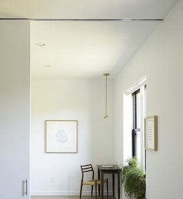

The Recessed Light Guy is an industry expert that helps you upgrade your home with quality recessed lighting services. With our services, you can create an ambient environment in any room. We have a team of experts that understand what it takes to highlight each decorative feature of recessed lighting features. Do you want to enhance your hallways, family rooms, living rooms, bedrooms, and entrances? Our Southern California lighting experts will meet your exact needs. We are a professional lighting in Riverside, CA company that explores all possible solutions to make your home beautiful and bright with quality recessed lighting. All recessed lights are LED and California Title-24 energy compliant. We bring the benefits and the beauty of recessed lighting to your home. With our services, you can enhance the quality of your life with modern lighting solutions. We understand the value of recessed light installation. For this, we guarantee consistency in quality, lighting vibrancy, and color. We also provide lighting fixtures to illuminate your paintings, bookshelves, fireplaces, and draperies, tables and sculptures. Our installation services transform your home.
